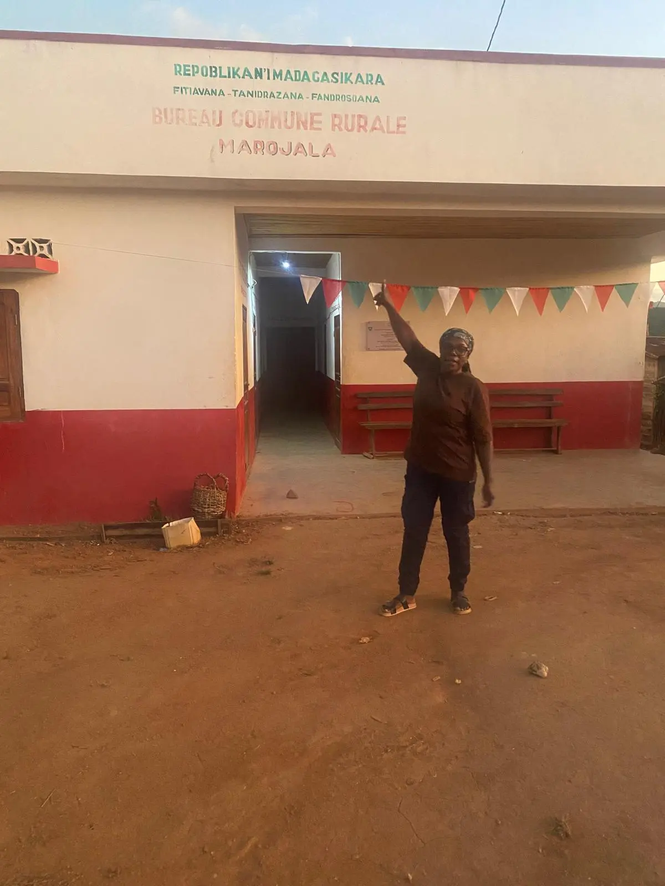
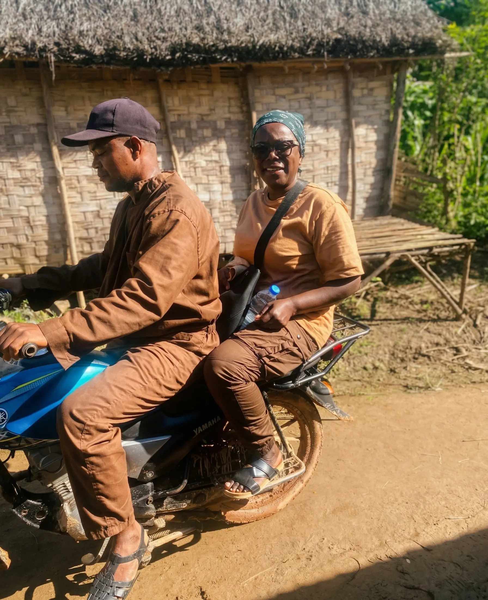

Notre Terre
Le cœur de Madagascar
Un voyage sensoriel au nord-est de l'île rouge, là où la nature dicte le rythme et où la tradition se transmet de génération en génération.
Un voyage sensoriel au nord-est de l'île rouge, là où la nature dicte le rythme et où la tradition se transmet de génération en génération.
Nous produisons jusqu’à 5 tonnes par an de vanille Bourbon de Madagascar, cultivée selon les méthodes traditionnelles, sans intrants ni pesticides.
Nos gousses, mesurant de 15 à 22 cm, sont conditionnées sous vide pour préserver leur fraîcheur exceptionnelle. Avec un taux de vanilline remarquable de 2,4 à 2,5, elles conviennent parfaitement à la confection de pâtisseries, de glaces et de produits gastronomiques de très haute qualité.
En harmonie avec notre environnement, nous cultivons également des variétés de poivre, des baies roses, et diverses épices endémiques de la région.

Un processus long, rigoureux et entièrement manuel, de la fleur jusqu'à l'expédition.
La pollinisation se fait manuellement, uniquement le matin, le jour même de l’ouverture de la fleur. Après ce mariage délicat, la maturité arrive après 8 à 9 mois, reconnaissable lorsque l’extrémité de la gousse jaunit légèrement.

Les gousses vertes sont placées dans un panier en osier plongé dans une eau chauffée entre 63° et 65° pendant 2 à 3 minutes. Ceci stoppe la maturation végétale et déclenche les réactions enzymatiques.
Lors de l’étuvage, les gousses sont emballées en couvertures pendant 24 à 48 heures. La glucovanilline se transforme en vanilline : la fermentation s'accélère, donnant à la vanille sa couleur noire et son premier parfum.
La vanille sèche ensuite au soleil sur des claies pendant 2h à 4h par jour. Elles sont couvertes et remises dans les caisses en bois chaque nuit. Ce processus dure quelques semaines.
Enfin, le séchage à l’ombre sur des claies aérées dure 1 à 2 mois. C'est cette étape cruciale qui affine les arômes et donne à la gousse l’aspect souple et huileux tant recherché.


Les gousses sont finalement classées par qualité et par longueur (de 15 à 22 cm). Elles sont ensuite mises en malles en bois tapissées de papier paraffiné pendant quelques semaines. C'est dans ce confinement que les arômes se stabilisent et s’enrichissent.
Pour garantir une conservation optimale de ces précieux arômes jusqu'à votre cuisine, toutes nos gousses sont expédiées sous vide.

